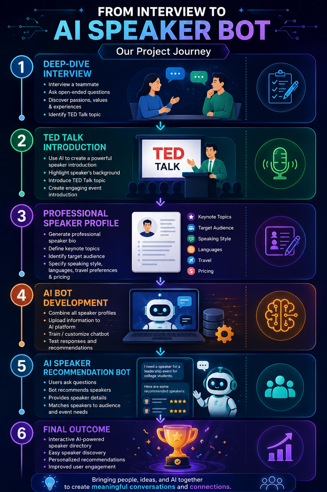
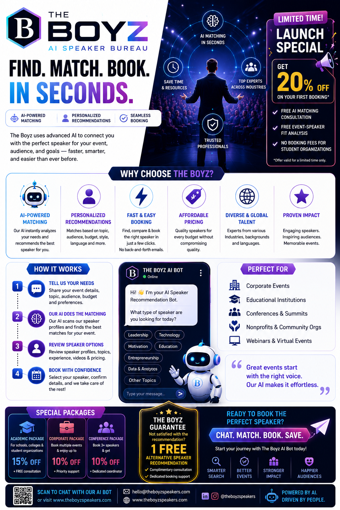

Data Engineering
ETL, ELT, data warehousing, data integration, and data modeling.
Engineering Data. Enabling Intelligence.
Transforming complex data into intelligent business solutions through analytics, cloud technologies, artificial intelligence, and meaningful communication.
I am a Senior Data Engineer and analytics professional with nearly two decades of experience delivering enterprise data solutions.
My experience spans healthcare, supply chain, banking, retail, insurance, and telecommunications. I specialize in data engineering, cloud transformation, data modeling, analytics, business intelligence, and artificial intelligence. My goal is to connect technology, business strategy, and human-centered communication to create measurable value.
ETL, ELT, data warehousing, data integration, and data modeling.
Azure, AWS, Databricks, Snowflake, and cloud modernization.
Power BI, Tableau, reporting, dashboards, and business intelligence.
Predictive analytics, generative AI, machine learning, and data science.
This timeline summarizes the major stages in AI development and shows how each stage influenced industries and practical business applications.
Early AI focused on logic, rule-based reasoning, mathematical problem solving, and the idea that machines could simulate human intelligence.
Expert systems captured specialist knowledge in rules to support diagnosis, troubleshooting, and operational decisions.
Organizations began using algorithms that learned patterns from data rather than relying only on manually programmed rules.
Larger datasets, distributed computing, and improved storage enabled customer analytics, personalization, and recommendation engines.
Neural networks achieved major improvements in image recognition, speech processing, medical imaging, and autonomous systems.
Cloud platforms made AI services more accessible and accelerated chatbots, predictive maintenance, and process automation.
Foundation models expanded AI from prediction into content generation, coding assistance, summarization, knowledge support, and conversation.
Current development emphasizes multimodal systems, AI agents, governance, transparency, security, and responsible human oversight.
Cloud-based data platform for healthcare analytics and reporting.
Interactive dashboards improving inventory visibility and forecasting.
Automated data quality, monitoring, and governance solutions.
An interactive AI project that matches event needs with professional speaker profiles and recommendations.
A concise reflection on my current leadership strengths and the development priorities guiding my growth as an AI-focused data professional.
The following artifacts document the project journey and communicate the product concept to prospective users.

This infographic presents the complete six-stage workflow: interview, TED Talk introduction, professional profile, bot development, recommendation experience, and final outcome.

This artifact explains the value proposition, AI matching approach, service benefits, booking process, customer groups, and promotional offerings.
Open the live chatbot and explore speaker recommendations based on event topic, target audience, goals, preferred speaking style, and other event needs.
Launch the ChatbotSharing practical stories about data, analytics, AI, and transformation.
Supporting professionals, students, architects, and technology teams.
Speaking on data engineering, analytics, cloud, and responsible AI.
Update the placeholder links below with your final contact information.